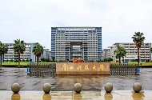
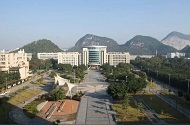
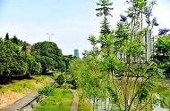
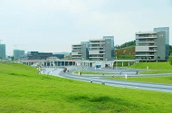

学校展览|SCHOOL
- 
- 
- 
- 
浔洲高中
浔州高中在“废科举，兴新学”的改革浪潮中诞生， 在新制度取代旧制度中成长。学校历来师资优秀、管理严格、教学质量高，在区内外有颇高的知名度。
其先为讲授经学的浔阳书院，后经浔州府四县（桂平、贵县、平南、武宣）士绅共议， 于1905年改为浔郡中学堂，讲授新学，为桂平新式学校之始。 1920年，改为广西省立第八中学，1949年改名广西省立浔州高级中学。 1961年定为自治区重点中学，“文革”期间停办，1978年恢复办学，1979年定为县重点高中。
学校特色：
学校坚持社会主义办学方向， 坚持依法治校，以德治校，教学管理、后 勤管理规范、民主、科学。深化教学改革， 全面推进素质教育，硕果累累。 高考成绩历年排原玉林地区八所县市重点中学前茅， 多年排地级贵港市三间重点中学之首， 1996年以来，连年获贵港市高中教育质量特等奖； 1999年高考学生丘先以899分的优异成绩获得广西文史类状元， 被北京大学录取。2004年，2005年在高考中取得辉煌的成绩， 2011，2012年高考更是连上新台阶。 浔高能够取到这样的成绩非常不简单， 浔高的学生是最辛苦的，但同时他们也是最勤奋，最好学的， 通过他们的奋勇拼搏，一次又一次地刷新了记录， 一年比一年取得更辉煌的成绩，不但为浔高， 同时也为桂平争回不少荣誉，为桂平人长脸了！
广西科技大学|GXUST
广西科技大学坐落在柳州市，是国务院学位委员会批准的学士、硕士学位授权单位， 是“卓越医生教育培养计划”试点高校，是“卓越工程师教育培养计划2.0”入选高校， 是“新工科研究与实践项目”入选高校，直属于广西壮族自治区人民政府管理。 2013年经自治区学位委员会批准，正式确定为2013-2018年立项建设新增博士学位授 予单位。是一所以工为主，包含工、管、理、经、文、法、艺术、教育、 医学等9大学科门类的多科性高等学校。
于2013年4月18日经教育部批准由原广西工学院和原柳州医学高等专科学校合并组建而成， 原广西工学院始建于1958年，1982年合并广西轻工业学院、广西机械工业学院、广西石油化工学院， 1985年从南宁迁至柳州办学。 原柳州医学高等专科学校创建于1951年，2003年经教育部批准升格为“柳州医学高等专科学校”
目前学校有东环、柳石、柳东3个校区，占地面积近4000亩。设16个二级学院，1个学部，19个研究所（中心）， 2个直属附属医院，81个本专科专业；现有教职工1800多人，全日制在校学生29000多人